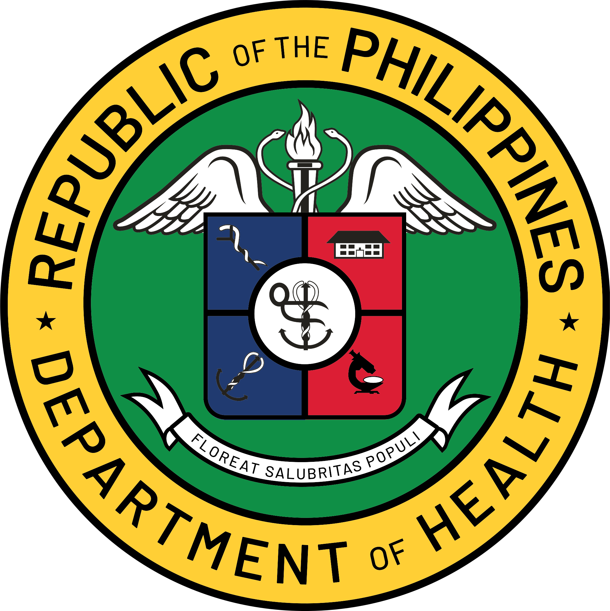

$DATE
$NAME
has successfully completed the online non-credit Professional Certificate
$COURSE_TITLE
Those who earn the $COURSE_TITLE professional certificate have successfully completed a series of training modules developed by the Department of Health. The course includes practice-based activities, capacity-building exercises, and scenario-driven assessments designed to equip participants with essential competencies for effective leadership and implementation of public health programs.
$SIGNATORY_ITEMS